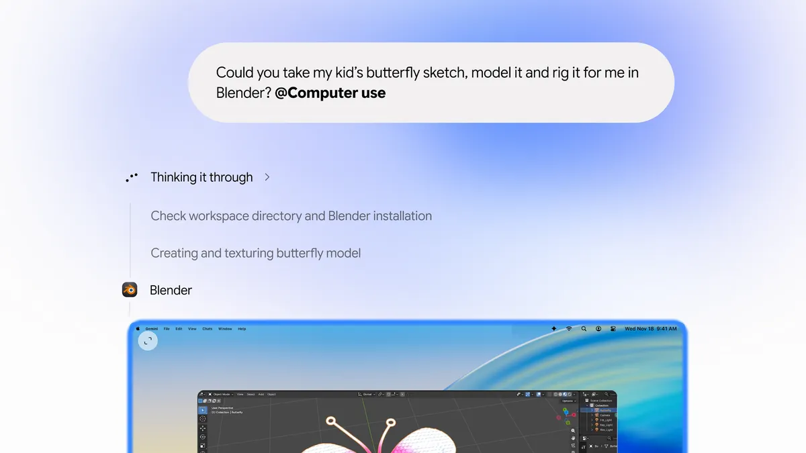

Mac 代操：螢幕留給你，確認鍵留在你手上
導讀Google 官方部落格產品公告，宣布 Gemini app for Mac 開放手文件代操（computer use）——原文為產品說明，未附任何實測數字
Gemini 這次賣的是背景勞務：你描述流程，它在一個隔離視窗裡點、打、填表，你的主螢幕與游標不必讓位。
隔離視窗：代操關在背景
computer use 進到 Mac 版 Gemini app，範圍寫得很清楚：本機檔案、桌面 app、網頁三處。
你描述一個多步驟流程，它接手點擊、打字、走選單與填表單。
原文用的動詞是 navigate、type、click；它做的是操作，不是回答。
機制的位置比動作重要：它跑在一個隔離的背景視窗，聊天裡同步給你看即時預覽。
因此主螢幕與游標完全空著。原文說你能繼續打字、設計或接電話，不必被中斷。
代操關在自己的視窗裡；這是它與「接管游標」那類工具最大的差別（編輯觀點）。
截圖把下指令的樣子拍出來了：對話框打上 @Computer use，思考步驟一行一行往下列。

圖裡那扇視窗就是它的工作區；「思考步驟」是它自己列的待辦，不是你逐條核可的清單。
原文沒解釋 @Computer use 這個標記的規則，也沒說步驟能不能中途改。它只示範了可以這樣下指令。
「在背景」的意思是不必等你放下手邊的事：預覽開在聊天裡，插手不用切換視窗。
所以它不是把你的電腦交出去，而是把一段雜活外包出去——主控權仍在你這一側。
四個案例，同一條形狀
原文以一句「你可以今天試試」帶出四個起手式——是示範，不是成效報告。
| 案例 | 動到的東西 | 原文寫的動作 |
|---|---|---|
| 批次調色、搭 3D 場景 | 常用設計軟體 | 批次調整照片色彩、設定複雜的 3D 場景 |
| 多箱運費報價 | 本機 PDF | 抓重量、尺寸與地址，填進多欄位報價單 |
| 跨區儀表板做簡報 | 多地區即時儀表板、Google Slides | 抓指標與截圖，組成一份簡報 |
| 二手拍賣上架 | 本機相片檔案夾裡的衣物照片 | 分析照片、查價、登錄品項、暫存上架 |
四個案例的形狀一致：讀本機檔案、操作某個 app、把結果放進另一個地方。
差別在終點。有的停在檔案，有的停在報價單，有的停在別人家平台的上架頁。
運費那則最像辦公室日常：從本機 PDF 抓重量、尺寸、地址，再填多欄位報價。
簡報那則跨得最遠：多地區儀表板抓指標與截圖，再組進 Google Slides。
原文沒說哪一類任務最穩、最慢或最常卡住，也沒給任何成功率。
示範的挑選本身有訊息：全是重複、要跨兩三個 app 的雜活。
這也解釋了「數十次點擊」為何是它的銷售語言：痛點在次數，不在難度。
這些案例有兩個共同前提：檔案在本機，終點是一份有格式的產出。
四項控制，四項門檻
控制權被拆成四件事。原文並列陳述，沒有先後順序。
權限、觀察、暫停、核准：四項並列，無先後；原文分散在兩段敘述，未給圖示
本站重繪，非原文圖；原文以第二段一句並列四項，未給此排列或層級。
四項裡最硬的是最後一項：關鍵動作要在發生前先核准，而不是事後補救。
但原文正文寫的是 approve key actions（關鍵動作）；同一頁由 Google AI 生成的摘要框則寫 approving every action（每個動作）。
（編輯觀點：一個是逐動把關，一個是只擋少數節點。）
權限也不是全有全無：你能指定它碰哪些 app，但原文沒說能不能只給單一檔案夾。
門檻寫在文末小字，四項缺一不可：機型、系統、帳號、方案。
這四項之外，原文沒提公司或學校帳號，也沒提 Intel Mac 能不能跑。
價格、用量上限、能不能同時跑幾個任務，原文一個字都沒給。
地區與語言只有一句：英文、美國。其他市場的時程沒有下文。
支援的 app 也沒有清單，原文只說「你選它能存取哪些 app」，沒說名單怎麼來。
這篇本質是產品公告：全文唯一的量化是「平常要數十次點擊」（Google 自述）。
沒有 benchmark、沒有耗時、沒有成功率。要評估真實效能，這篇不夠。
它沒承諾成功率，也沒說任務中斷後檔案會不會留半成品；這些要實際用過才知道。
四項控制其實指向同一件事：關鍵動作留了核准關卡，代操才敢放進日常工作流。
放在 Gemini app 的脈絡裡，這是最越界的一步：從回答問題，走到替你在別人的軟體裡按鈕。
倒過來看，它把安全寫成產品賣點而非文末附註（編輯觀點）。
帶走三件事
隔離是主設計，不只是安全語。代操關進背景視窗，你才敢同時做事。
權限要自己收。能挑 app、能暫停、關鍵動作先核准，這三項別關掉。
先確認自己合規。英文、美國、Apple Silicon、訂閱方案，少一項就等。
同一主題的其他館藏
導讀為本站編輯內容（AI 摘解自原文與館藏重點，非官方文件）；原文未提供效能數字，文中引述的「數十次點擊」為 Google 自述。圖解為本站重繪，原文以文字列舉、未給該排列。內容經對照原文的獨立事實審查後發布。